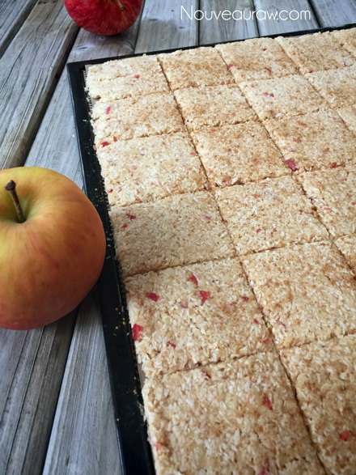

Apple Pie Crackers

~ raw, vegan, gluten-free, nut-free ~
I am not going to tell you that this is my new favorite cracker. Nope, not gonna do it. I refuse! I mean really… how many crackers can become my favorite? You will start to lose faith in me… sheesh…. to claim that this cracker is my favorite… yeah right?!
Just because it is light and crispy (love light and crispy!) and just because it tastes like a crunchified apple pie (love crunchified apple pie!) doesn’t mean that it is my new favorite cracker… or does it? IT DOES, it does and, it is, IT IS!
Would I recommend any substitutions?… nope but that’s not to say that it can’t be done. It just won’t taste like the amazing cracker that I created and you will miss out on experiencing my new favorite cracker. hehe
Do you know what it really kind of reminded me of? The rim of the crust of an apple pie… the part that got crunchy and browned from the sugars in the apples. The part that I always snapped off when I thought no one was looking. It wasn’t much of a surprise to find the whole rim of the crust nibbled off of a pie that was sitting on the dessert table at a family function.
When you head out to the grocery store to get the ingredients look for the following… perfectly ripe bananas, the fashionable polka-dotted ones. This will give you the most flavor and sweetness. As well as being easier on the digestive system. Be sure to use fresh lemon juice, not bottled… nothing compares to the fresh stuff.
Lastly, look for the best organic apples that you can find. Taste test them, never assume flavors because it will always differ from apple to apple. If you can’t afford or find organic apples, be sure to wash and peel them before using them. With organic, you can leave the peel on for the extra nutrients.
Ingredients:
Yields 1 (12×12) dehydrator tray = 64 crackers
- 1 ripe banana (110 g without peel)
- 3/4 cup (8 oz) raw apple sauce
- 2 Tbsp maple syrup (optional)
- 2 tsp fresh lemon juice
- 1/4-1/2 tsp Himalayan pink salt
- 1 Tbsp Apple Pie Spice
- 3 cups (269 g) shredded coconut
- 3 cups diced, (365 g) organic apples
Topping:
Preparation:
- Blend the bananas, applesauce, sweetener (if used), lemon juice, salt, and Apple Pie Spice in a food processor, fitted with the “S” blade, until creamy.
- Add shredded coconut and process till mixed.
- Add the apples, pulse to blend them in, leaving small bits in the batter.
- Line the dehydrator tray with a non-stick teflex sheet.
- Spread the batter from edge to edge.
- Make sure that you spread it evenly so it dries evenly.
- Wipe the edges clean.
- Score the crackers into desired shapes and sizes. You can use a pizza cutter or a long metal ruler to create the score marks.
- Sprinkle salt and cinnamon on top.
- Dehydrate at 145 degrees (F) for 1 hour, then reduce to 115 degrees (F) and continue drying for up to 24 hours… until dry and crispy.
- Snap apart and let cool before storing in an airtight bag/container.
- They should last several weeks in the pantry and can be frozen for 1-2 months. If they start to soften due to humidity, throw them back in the dehydrator to crisp up.
The Institute of Culinary Ingredients™
- To learn more about maple syrup by clicking (here).
- Why do I specify Ceylon cinnamon? Click (here) to learn why.
- What is Himalayan pink salt and does it really matter? Click (here) to read more about it.
Culinary Explanations:
- Why do I start the dehydrator at 145 degrees (F)? Click (here) to learn the reason behind this.
- When working with fresh ingredients it is important to taste test as you build a recipe. Learn why (here).
- Don’t own a dehydrator? Learn how to use your oven (here). I do however truly believe that it is a worthwhile investment. Click (here) to learn what I use.
Off to the dehydrator we go!

© AmieSue.com